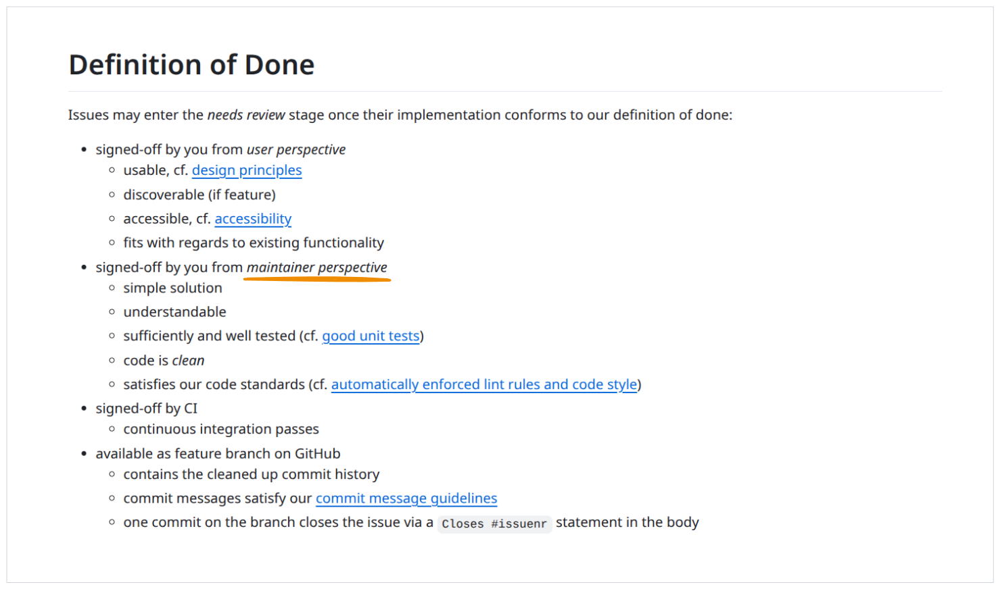

No Refactoring Issues
The inevitable cleanup, and how not to do it.
Nico Rehwaldt 2025
📝 Exercise your own judgement as you digest the contents of this presentation.
Understanding accidental and essential complexity in software engineering.
Essential (inherent) complexity is caused by the problem to be solved, and cannot be removed.
Accidental complexity is what engineers create and can fix.
Adapted from No silver bullet
Accidental complexity
Accidental complexity has many forms, in code and UX
A quick fix enables interaction A. As a result, the user journey B is broken.
We plan to do X as a first step towards a higher goal, but never follow up.
Accidental complexity is often caused at design time, by insufficient understanding of the business domain.
💬 "Make this button red!"
❓ "Should the user be able to execute this irreversible operation?"
[Most software] breaks because teams lose alignment with the business problem they’re supposed to solve. Systems become tangled with technical assumptions that age poorly (ref).
Accidental complexity is inevitable
Environments change, requirements change, rendering functionality outdated and dependencies vulnerable.
Over time any application decays in code and user experience, whether you touch it or not.
We introduce accidental complexity all the time, through leaky abstractions, half-baked trade-offs, and "quick fixes".
We want to have measures to keep our applications in check.
Technical debt = accidental complexity, in code
[Technical debt is] a collection of design or implementation constructs that make future changes more costly or impossible (ref).

How to tame it? Through refactoring.
Refactoring is a [...] technique for restructuring an existing body of code, altering its internal structure without changing its external behavior (ref).
The goal of refactoring is to adapt existing code to make new changes straightforward.
Refactoring ensures that the application, over time, stays fit for purpose, for its use.
Refactoring keeps the velocity in check.
By doing it continuously, we keep the effort low.
By doing it continuously, we make it a habit, a normal thing, an inherent part of our developer tool belt. We make it a path traveled.
By doing it opportunistically, focusing on the current task at hand, we ensure that we do it where it matters most: in critical code paths.
Rules of (not) Refactoring
Our environment shapes us and we shape our environment.
💬 "I created an issue for it."
📢 "I did not bother to fix this thing today, where I have context, but hope a magic wizard will some day come and fix it."
💡 Nobody is going to clean up after you. It is your code base, your responsibility. You are the one suffering from the mess you leave behind.
1️⃣ no-refactoring-issues - do not give yourself an easy excuse to offload work to your future self.
💬 "I don't dare to touch this code path, because I don't know what breaks."
📢 "Our (automated) testing practice sucks. I don't trust it to meaningfully report whats broken, when I change things."
📢 "Our (automated) testing practice sucks. I know I have to fix 1000 tests after this small change."
💡 A high functional test coverage gives you peace of mind that regardless of how much code you change things will be ok for your users.
2️⃣ architect-for-testability - build a system that is easy to test, and it will be well composed, easier to maintain, and understand. Support it with a comprehensive, fast, and reliable test suite.
💬 "I don't understand what our users are doing."
❓ "How do you want to build a great experience supporting them?"
3️⃣ understand-the-business-domain - know what problems your users have, and choose the tools to support them wisely.
💬 "I could not fix it."
📢 "I was too lazy to fix it, and I hope someone else will do it someday."
❓ Who is the magic wizard who can fix things for you?
4️⃣ easier-when-practiced - Yes, refactoring can be complicated. It only gets harder if we don't practice it, or let the code base erode further. Start refactoring today.
💬 "I did not know cleaner was my job description."
📢 "I have a very simplistic view of what a developer's job is."
❓ Who on your team ensures things are maintainable for the long run?
5️⃣ embody-the-maintainer - ensure that the maintainer perspective is part of everything you do. Add it to your definition of done, enforce it.
💬 "I am behind schedule to wrap up this issue".
📢 "I keep the code base in this state so I'll be behind schedule next time, too".
6️⃣ invest-in-tomorrow - do not accept today's excuses, invest reasonably to set yourself up for (your) future success.
Always leave the campground cleaner than you found it.
(Boy scouts of America)
When is a refactoring successful? Is it always worth it?
The way we approach things makes all the difference.
💬 "Next time we should clean this up."
💡 No body is going to prioritize your cleanup, it ships no user value. Clean it up now, in context, or keep suffering.
1️⃣ opportunistic-in-context - make reasonable efforts to clean up the mess you encounter, while you have context. It is cheaper now.
💬 "I refactored, but the code base is no better now."
📢 "I changed things without a plan."
💡 The feeling that "something is wrong" does not automatically lead to a successful outcome.
2️⃣ know-what-and-why - understand what you do and why, before you do. Use the plan to assess if the actual step of doing is feasible and worth the effort. If in doubt, get a second opinion.
💬 "Refactoring makes a code review hard to execute."
📢 "I did not properly structure my work, so others can follow along."
3️⃣ make-it-explicit - separate refactoring and feature development. Document what changes, why. Structure work in multiple PRs, or multiple commits.
💬 "Is this bike-shedding?"
💡 Be concious about your time. Put your attention to places where it matters. Be able to argue what changes, why. Get buy-in from your team.
4️⃣ improve-substantially - cosmetic changes are a waste of time and attention - refactor where it is worth the effort. Manage technical debt wisely, you'll never fully get rid of it anyway.
💬 "I refactored our test suite."
📢 "Now there is five ways to write our E2E tests."

💡 Every additional pattern you introduce puts a mental toll on your future self.
5️⃣ finish-what-you-started - ensure new patterns are recognizable and fully adopted, at the very least on the the happy path of your application. Unbuild old cruft.
Make refactoring and continuous improvement integral parts of our work.
Getting there is a cultural and technical challenge
Cultural, because we need to get over old habbits, change our way of working.
Technical, because the first steps to a better code base are the hardest, and skills have to be learned.
A healthy environment and following basic rules of refactoring can help.
Environment
Rules of refactoring
Note to managers
- Empower your peers, setup a healthy environment
- Provide clear expectations, establish accountability
- Encourage folks to live by the rules of refactoring
- Setup friendly reminders
Thanks
❤️
Appendix
Things that may not work (1)
- Refactoring Friday - You'll never complete your refactoring in time.
- Refactoring issues - Offload today's responsibility to your future self.
- 30% time for refactoring - Add this to the 13% working on papercuts, the 37.85% reviewing, the 20% discussing strategic matters, and the 23.14% coding.
Things that may not work (2)
- Rebuild periodically - Nothing is more permanent than a temporary solution. Also, remember the second system effect.
- Solve it with more process - What will this magic process be?
Simple reminders can go a long way
